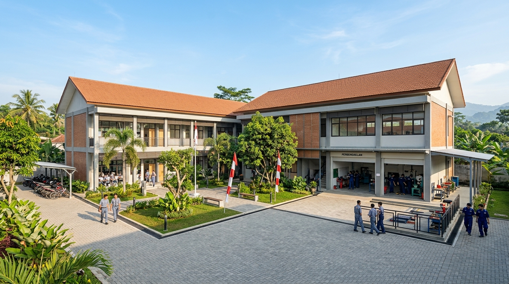

Teknik Kendaraan Ringan (TKR)
Mempelajari perawatan mesin, sistem kelistrikan, sasis, pemindah tenaga, serta diagnosa gangguan kendaraan roda empat di bengkel praktik sekolah.
SMKS Saradan membekali peserta didik dengan keterampilan praktik di bidang otomotif, teknologi informasi, rekayasa perangkat lunak, dan desain kreatif untuk siap bekerja, berwirausaha, maupun melanjutkan studi.

Kampus SMKS Saradan — Jl. Raya Tonjong No. 18, Kec. Tajurhalang, Kab. Bogor.
Pilih bidang keahlian di bawah ini untuk melihat ringkasan kompetensi yang dipelajari siswa.
Mempelajari perawatan mesin, sistem kelistrikan, sasis, pemindah tenaga, serta diagnosa gangguan kendaraan roda empat di bengkel praktik sekolah.
Mempelajari perakitan perangkat keras, instalasi jaringan kabel dan nirkabel, konfigurasi router, administrasi server, serta keamanan jaringan.
Mempelajari pemrograman web dan aplikasi, perancangan basis data, antarmuka pengguna, serta pengujian perangkat lunak berbasis proyek nyata.
Mempelajari desain grafis, tipografi, ilustrasi digital, fotografi, serta produksi dan penyuntingan video untuk kebutuhan media dan merek.
Jl. Raya Tonjong No. 18, Kec. Tajurhalang, Kab. Bogor · Buka Senin–Jumat pukul 07.00–15.00 WIB.